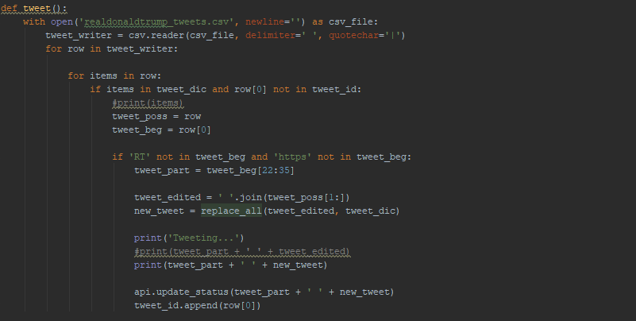
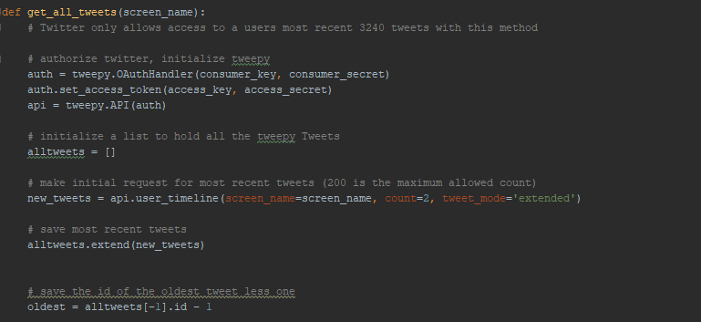
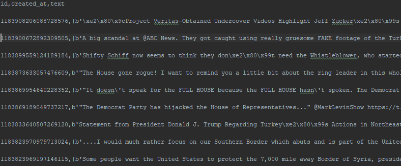

> The main function that replaces the tweets text and then ultimately tweets out the altered text

> This function downloads an initial set of tweets and instantiates the twitter API with our AUTH fields

> After downloading the requested tweets they are then formatted and saved to a .csv file
> The end product shows a slightly more positive version of our Commander in Chief